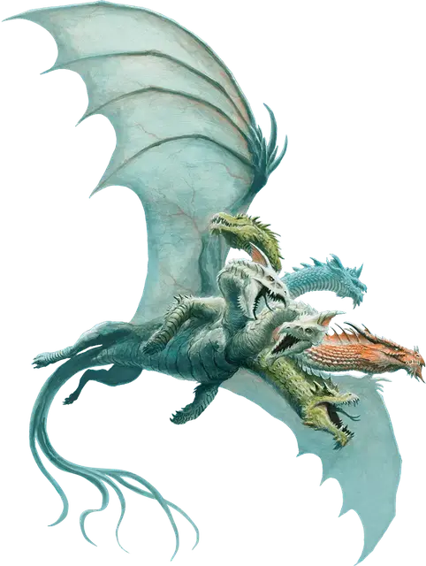

Дракогидра
Dracohydra
Огромный Монстр, хаотично-злой

Класс Доспеха 17 (природный доспех)
Хиты 218 (19к12 + 95)
Скорость 30 футов, плавая 30 футов, летая 30 футов
| мод | спас | ||
|---|---|---|---|
| СИЛ | 20 | +5 | +5 |
| ЛОВ | 12 | +1 | +1 |
| ТЕЛ | 20 | +5 | +5 |
| мод | спас | ||
|---|---|---|---|
| ИНТ | 6 | −2 | −2 |
| МДР | 12 | +1 | +1 |
| ХАР | 12 | +1 | +1 |
Навыки Восприятие +9
Чувства тёмное зрение 60 футов, пассивное Восприятие 19
Языки Драконий
Опасность 11 (7200 опыта)
Бонус мастерства +4
Особенности
Язык. Понимает Драконий, но не говорит.
Многочисленные головы. У дракогидры пять голов. Пока у дракогидры больше одной головы, она совершает с преимуществом спасброски от испуга, глухоты, лишения сознания, ослепления, очарования и ошеломления.
Если дракогидра за один ход получает урон 30 или больше, одна из её голов умирает. Если умрут все головы, умирает и дракогидра.
В конце своего хода она отращивает по две головы за каждую умершую голову с конца её предыдущего хода, если только она не получала за этот период урон излучением. За каждую отращенную голову дракогидра восстанавливает по 10 хитов.
Реагирующие головы. За каждую голову после первой дракогидра получает дополнительную реакцию, которую можно использовать только для совершения провоцированных атак.
Неусыпный. Пока дракогидра спит, как минимум одна её голова бодрствует.
Действия
Мультиатака. Дракогидра совершает столько атак укусом, сколько голов у нее есть.
Укус. . Рукопашная атака оружием: +9 к попаданию, досягаемость 10 фт., одна цель. Попадание: 10 (1к10+5) урона выбранного дракогидрой типа: кислотой, холодом, огнём, электричеством или ядом.
Разноцветное дыхание (перезарядка 4-6). Головы дракогидры выдыхают единый поток разноцветной энергии в 60-футовом конусе. Все существа в этой области должны совершить спасбросок Ловкости Сл 17. При провале существо получает 33 (6к10) урона типа, выбранного дракогидрой: кислотой, холодом, огнём, электричеством или ядом. При успехе существо получает половину этого урона.
Описание
Дракогидра - результат тайных экспериментов, направленных на воссоздание силы Тиамат. Слияние магии цветных драконов с кровью гидры привело к появлению многоголового драконьего монстра с крыльями и множеством змееподобных хвостов. Оружие дыхания дракогидры - это разноцветная масса энергии, которая содержит сущность элементарной силы цветного дракона.
Появление этих прожорливых существ предвещает катастрофу для любого региона, в котором они поселяются, поскольку они непрестанно питаются — каждая голова требует своего собственного пира. Если их оставить в покое, они охотятся на местную фауну почти до полного ее исчезновения, а затем переходят к угрозе жителям близлежащих поселений.